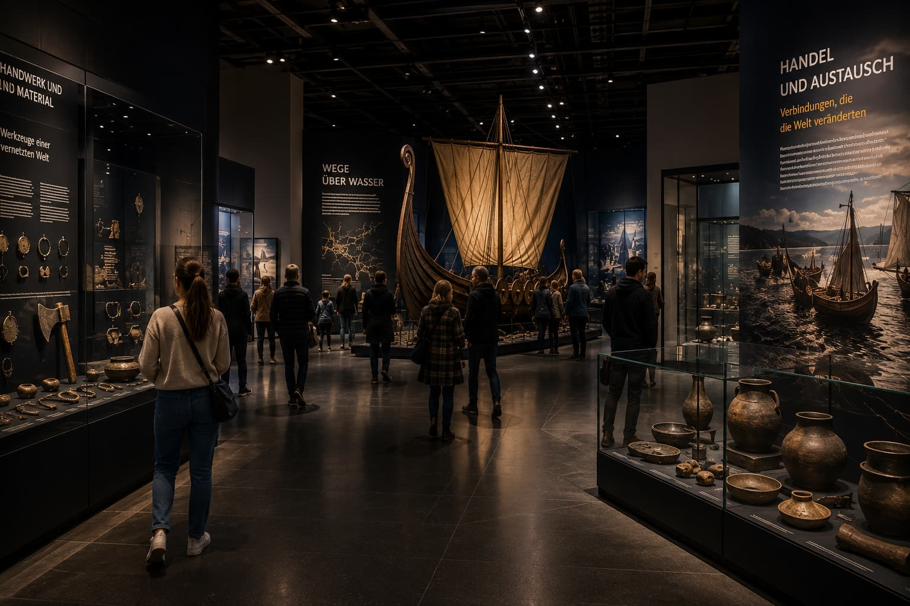

Familien
Digitale Stationen und kleine Aufgaben helfen Familien dabei, Handelsrouten, Runen und das Leben im Langhaus gemeinsam zu entdecken.
Wikinger Museum Saarbrücken
Entdecke die Welt der Wikinger – von Langschiffen und Handelsrouten bis zu Runensteinen und nordischer Mythologie.
Geschichte erleben Saarland
Besucher begegnen Langschiffen, Runensteinen, Handelsgütern und archäologischen Funden, die den Alltag der Wikingerzeit greifbar machen.
Handel, Seefahrt, Handwerk und nordische Mythologie werden anhand von Rekonstruktionen, Fundstücken und Ausstellungsstationen erzählt – von den Küsten Skandinaviens bis zu den großen Handelsrouten Europas.

Museum Saarbrücken
Digitale Stationen und kleine Aufgaben helfen Familien dabei, Handelsrouten, Runen und das Leben im Langhaus gemeinsam zu entdecken.
Runen, Archäologie und Wikingerhandel bieten konkrete Anknüpfungspunkte für Unterricht, Projekte und Exkursionen.
Ausgewählte Themenwelten verbinden Archäologie, nordische Kultur und die Geschichte der Wikingerzeit.
Wikinger Ausstellung Saarland
Vom Langschiff über den Runenstein bis zu Handelswaren aus fernen Regionen zeigt die Ausstellung, wie eng Skandinavien mit anderen Teilen Europas verbunden war.
Odin, Thor und Freyja, archäologische Funde, Handwerk und Handel eröffnen unterschiedliche Perspektiven auf die Wikingerzeit und laden dazu ein, bekannte Klischees neu zu betrachten.

Studienprojekt
Diese Website entstand im Rahmen des Studiengangs Digital Media Marketing der Hochschule Kaiserslautern.
Studiengang kennenlernen